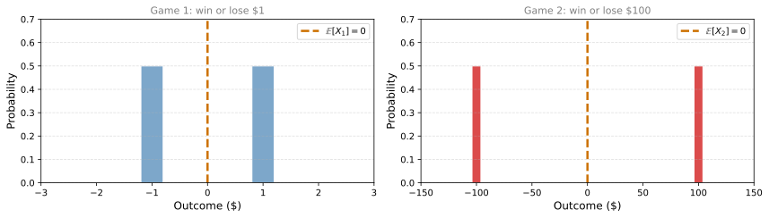
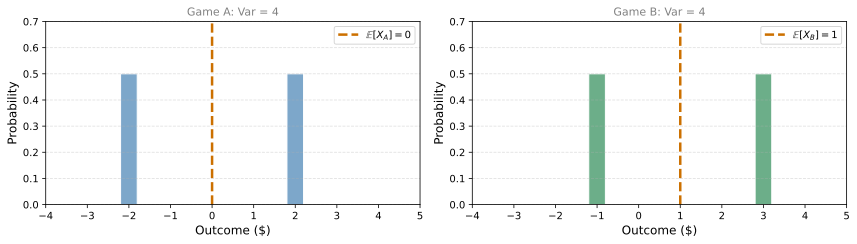
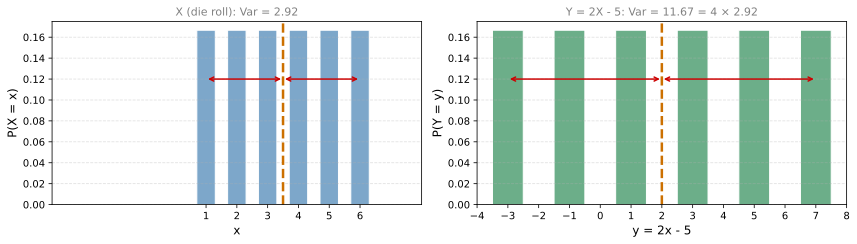
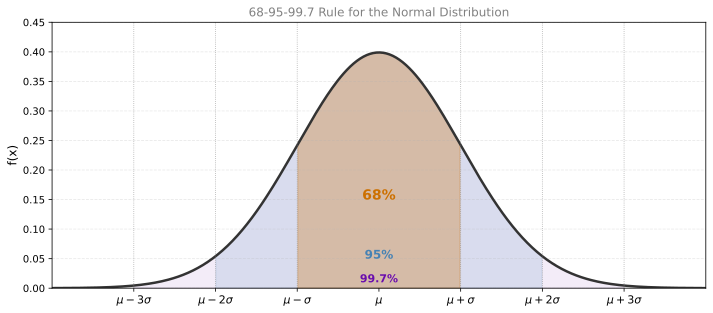
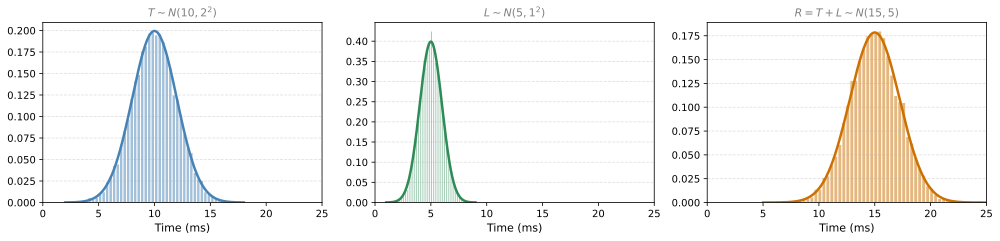
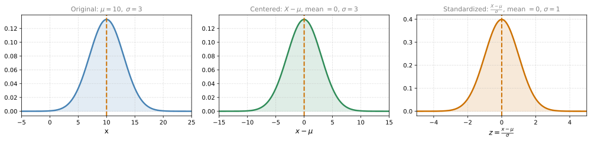

Variance
probability
The expected value tells you where a distribution is centered, but it does not tell the whole story. Two distributions can have the same mean but look completely different: one narrow, the other wide. The measure that captures this difference in spread is called the variance.
Same Mean, Different Spread
Consider two coin-flip games:
- Game 1: Heads wins $1, tails loses $1.
- Game 2: Heads wins $100, tails loses $100.
What is the fair price to play each game?
TipAnswer
Both games have \(\mathbb{E}[X] = 0\). If you played either game repeatedly, on average you would break even. The fair price is $0 for both.
While these games have the same expected value, there is clearly a big difference between them. Game 2 has a much larger spread of possible outcomes.
Same balance point, but very different spreads. We need a number that quantifies this.
Building Up to Variance
How can we measure how “spread out” a distribution is? Let us try a few approaches.
Attempt 1: Average deviation
The deviation of each point from the mean is \(x - \mathbb{E}[X]\). For Game 1:
- Deviation of \(+1\): \(1 - 0 = 1\)
- Deviation of \(-1\): \(-1 - 0 = -1\)
- Average deviation: \(\frac{1 + (-1)}{2} = 0\)
The average deviation is always zero because positive and negative deviations cancel out. This happens for any distribution: the mean is defined as the point where deviations balance.
Attempt 2: Average absolute deviation
Make all deviations positive by taking absolute values: \(|1| = 1\) and \(|-1| = 1\). Average = 1. This works intuitively, but the absolute value function introduces mathematical complications that make further derivations messy.
Attempt 3: Average squared deviation (Variance)
Square the deviations instead: \(1^2 = 1\) and \((-1)^2 = 1\). Average = 1. Squaring removes the sign issue (all values become positive) without the mathematical headaches of absolute value. This is the approach used in statistics.
Definition of Variance
The variance of a random variable \(X\) is the expected value of the squared deviation from the mean:
\[ \text{Var}(X) = \mathbb{E}\left[(X - \mathbb{E}[X])^2\right] \]
In words: find the mean, compute how far each outcome deviates from it, square those deviations, then take the weighted average.
For our two games:
- Game 1: \(\text{Var}(X_1) = \frac{1}{2}(1-0)^2 + \frac{1}{2}(-1-0)^2 = \frac{1}{2}(1) + \frac{1}{2}(1) = 1\)
- Game 2: \(\text{Var}(X_2) = \frac{1}{2}(100-0)^2 + \frac{1}{2}(-100-0)^2 = \frac{1}{2}(10000) + \frac{1}{2}(10000) = 10{,}000\)
Game 2 has a variance 10,000 times larger than Game 1. The spread is captured quantitatively.
Same Variance, Different Mean
Variance measures spread independently of where the distribution is centered. Consider:
- Game A: Heads wins $2, tails loses $2. Mean = 0.
- Game B: Heads wins $3, tails loses $1. Mean = 1.

- Game A: \(\text{Var} = \frac{1}{2}(-2-0)^2 + \frac{1}{2}(2-0)^2 = 4\)
- Game B: \(\text{Var} = \frac{1}{2}(-1-1)^2 + \frac{1}{2}(3-1)^2 = 4\)
Different means, same variance. The spread of outcomes around each mean is identical.
Alternative Formula
The definition \(\text{Var}(X) = \mathbb{E}[(X - \mathbb{E}[X])^2]\) is intuitive, but there is an equivalent formula that is often easier to compute:
\[ \text{Var}(X) = \mathbb{E}[X^2] - \left(\mathbb{E}[X]\right)^2 \]
This says: the variance equals the expected value of the square minus the square of the expected value.
TipDerivation (expand the square)
Start with the definition and expand:
\[ \text{Var}(X) = \mathbb{E}[(X - \mathbb{E}[X])^2] = \mathbb{E}[X^2 - 2X\mathbb{E}[X] + (\mathbb{E}[X])^2] \]
By linearity of expectation (splitting the sum, pulling constants out):
\[ = \mathbb{E}[X^2] - 2\mathbb{E}[X]\mathbb{E}[X] + (\mathbb{E}[X])^2 = \mathbb{E}[X^2] - (\mathbb{E}[X])^2 \]
Variance Under Linear Transformation
What happens to variance when you transform a random variable? If \(Y = aX + b\):
\[ \text{Var}(aX + b) = a^2 \cdot \text{Var}(X) \]
Key observations:
- Adding a constant (\(b\)) does not change the variance. It just shifts the distribution without affecting the spread.
- Multiplying by a constant (\(a\)) scales all deviations by \(a\), so squared deviations scale by \(a^2\).
Example: You roll a die (\(X\)) and your winnings are \(Y = 2X - 5\).
The deviations of \(Y\) from its mean are exactly twice the deviations of \(X\) from its mean (the \(-5\) shifts both \(Y\) and its mean by the same amount, so it cancels in the deviation). Since variance uses squared deviations, \(\text{Var}(Y) = 2^2 \cdot \text{Var}(X) = 4 \cdot \text{Var}(X)\).

The deviations (red arrows) doubled from \(X\) to \(Y\), so variance quadrupled.
Summary
| Property | Formula |
|---|---|
| Definition | \(\text{Var}(X) = \mathbb{E}[(X - \mathbb{E}[X])^2]\) |
| Alternative formula | \(\text{Var}(X) = \mathbb{E}[X^2] - (\mathbb{E}[X])^2\) |
| Linear transformation | \(\text{Var}(aX + b) = a^2 \cdot \text{Var}(X)\) |
| Adding a constant | \(\text{Var}(X + b) = \text{Var}(X)\) |
| Scaling | \(\text{Var}(aX) = a^2 \cdot \text{Var}(X)\) |
Review Questions
1. Two games both have \(\mathbb{E}[X] = 5\). Game A pays either $4 or $6 (each with probability 0.5). Game B pays either $0 or $10 (each with probability 0.5). Which has greater variance?
TipAnswer
Game A: \(\text{Var} = 0.5(4-5)^2 + 0.5(6-5)^2 = 0.5(1) + 0.5(1) = 1\). Game B: \(\text{Var} = 0.5(0-5)^2 + 0.5(10-5)^2 = 0.5(25) + 0.5(25) = 25\). Game B has much greater variance because its outcomes are farther from the mean.
1. Why is the average deviation from the mean always zero?
TipAnswer
Because the mean is defined as the balance point of the distribution. Positive deviations (values above the mean) exactly cancel negative deviations (values below the mean). That is why we square the deviations before averaging.
1. If \(\text{Var}(X) = 9\), what is \(\text{Var}(3X + 7)\)?
TipAnswer
\(\text{Var}(3X + 7) = 3^2 \cdot \text{Var}(X) = 9 \times 9 = 81\). The \(+7\) does not affect variance (it just shifts the distribution), but multiplying by 3 scales variance by \(3^2 = 9\).
1. For a fair die, compute \(\text{Var}(X)\) using the alternative formula \(\mathbb{E}[X^2] - (\mathbb{E}[X])^2\).
TipAnswer
\(\mathbb{E}[X] = 3.5\), so \((\mathbb{E}[X])^2 = 12.25\). \(\mathbb{E}[X^2] = \frac{1}{6}(1+4+9+16+25+36) = \frac{91}{6} \approx 15.17\). Therefore \(\text{Var}(X) = 15.17 - 12.25 = 2.92\).
1. Can variance ever be negative?
TipAnswer
No. Variance is the expected value of a squared quantity, \((X - \mathbb{E}[X])^2\). Squares are always non-negative, so their weighted average is also non-negative. Variance is zero only when the random variable takes a single value with probability 1 (no spread at all).
Standard Deviation
Variance is useful, but it has a problem with units. If \(X\) is measured in meters (for example, people’s heights), then \(\mathbb{E}[X]\) is also in meters. But the variance is in meters squared, because we squared the deviations. Meters squared measures area, which is not helpful when you want to talk about the spread of heights.
The fix is simple: take the square root of the variance. This is called the standard deviation:
\[ \sigma = \sqrt{\text{Var}(X)} \]
The standard deviation is measured in the same units as the original variable. If heights are in meters, the standard deviation is also in meters.
| Measure | Formula | Units |
|---|---|---|
| Variance | \(\text{Var}(X) = \mathbb{E}[(X - \mathbb{E}[X])^2]\) | Units\(^2\) |
| Standard deviation | \(\sigma = \sqrt{\text{Var}(X)}\) | Same units as \(X\) |
Standard Deviation and the Normal Distribution
Recall that the normal distribution has two parameters: \(\mu\) (the mean) and \(\sigma\) (the standard deviation). These are exactly the measures you have been learning about. The parameter \(\sigma\) in the normal distribution formula is the standard deviation. We built this formula step by step in the Normal Distribution section.
Parameters:
- \(\mu\): center of the bell (mean)
- \(\sigma\): spread of the bell (standard deviation)
\[ X \sim N(\mu, \sigma^2) \]
\[ f_X(x) = \frac{1}{\sqrt{2\pi}\sigma} \, e^{-\frac{1}{2}\frac{(x-\mu)^2}{\sigma^2}} \]
A useful visual cue: \(\sigma\) is the distance from the center to the point where the bell curve changes concavity (from curving downward to curving upward).
68-95-99.7 Rule
For any normal distribution \(N(\mu, \sigma^2)\):
- 68% of the data falls within 1 standard deviation of the mean: \([\mu - \sigma,\; \mu + \sigma]\)
- 95% falls within 2 standard deviations: \([\mu - 2\sigma,\; \mu + 2\sigma]\)
- 99.7% falls within 3 standard deviations: \([\mu - 3\sigma,\; \mu + 3\sigma]\)

In statistics, it is very common to talk about being “within 1 standard deviation” or “within 2 standard deviations” of the mean. If a data point is more than 2 or 3 standard deviations from the mean, it is considered unusual or an outlier.
Review Questions
1. If the variance of exam scores is 25, what is the standard deviation?
TipAnswer
\(\sigma = \sqrt{25} = 5\). If scores are measured in points, the standard deviation is 5 points.
1. Heights of adults follow \(N(170\text{ cm}, 10^2\text{ cm}^2)\). What percentage of adults are between 150 cm and 190 cm tall?
TipAnswer
150 cm = \(\mu - 2\sigma\) and 190 cm = \(\mu + 2\sigma\). By the 68-95-99.7 rule, about 95% of adults fall within 2 standard deviations of the mean.
1. A value is 3.5 standard deviations above the mean of a normal distribution. Is this common or unusual?
TipAnswer
Very unusual. 99.7% of data falls within 3 standard deviations. Being 3.5 standard deviations away puts you in the extreme tail (less than 0.05% of observations). This would typically be considered an outlier.
Sum of Gaussians
Here is a practical application of everything you have learned about mean, variance, and standard deviation: what happens when you add two Gaussian random variables?
Example: Computer Response Time
Imagine you are studying the total response time of a computer system. It has two components:
- Processing time \(T\): the time the system takes to process a task. Modeled as \(T \sim N(10, 2^2)\) (mean 10 ms, standard deviation 2 ms).
- Network latency \(L\): the communication delay. Modeled as \(L \sim N(5, 1^2)\) (mean 5 ms, standard deviation 1 ms).
Assume \(T\) and \(L\) are independent. The total response time is \(R = T + L\). What distribution does \(R\) follow?

The result \(R\) is still Gaussian. What are its parameters?
Mean: By linearity of expectation:
\[ \mu_R = \mathbb{E}[T + L] = \mathbb{E}[T] + \mathbb{E}[L] = 10 + 5 = 15 \]
Variance: Since \(T\) and \(L\) are independent, the variance of the sum is the sum of the variances:
\[ \text{Var}(R) = \text{Var}(T) + \text{Var}(L) = 4 + 1 = 5 \]
Standard deviation:
\[ \sigma_R = \sqrt{\text{Var}(R)} = \sqrt{5} \approx 2.236 \]
So the total response time follows \(R \sim N(15, 5)\).
General Rule
If \(X \sim N(\mu_X, \sigma_X^2)\) and \(Y \sim N(\mu_Y, \sigma_Y^2)\) are independent, and you form the linear combination \(Z = aX + bY\), then:
\[ Z \sim N\left(a\mu_X + b\mu_Y,\;\; a^2\sigma_X^2 + b^2\sigma_Y^2\right) \]
Key points:
- The sum (or any linear combination) of independent Gaussians is still Gaussian.
- Means add (with coefficients): \(\mu_Z = a\mu_X + b\mu_Y\).
- Variances add (with squared coefficients): \(\sigma_Z^2 = a^2\sigma_X^2 + b^2\sigma_Y^2\).
- Standard deviations do not simply add. You must add variances first, then take the square root.
NoteWhy Variances Add (for Independent Variables)
When \(X\) and \(Y\) are independent, knowing the value of \(X\) gives no information about \(Y\). The “spread” in \(X\) and the “spread” in \(Y\) contribute independently to the total spread of \(X + Y\). This is why you add variances, not standard deviations.
Review Questions
1. If \(X \sim N(20, 9)\) and \(Y \sim N(30, 16)\) are independent, what is the distribution of \(X + Y\)?
TipAnswer
\(X + Y \sim N(20 + 30,\; 9 + 16) = N(50, 25)\). The mean is 50 and the standard deviation is \(\sqrt{25} = 5\).
1. Why can you not simply add standard deviations when summing independent Gaussians?
TipAnswer
Because variance (not standard deviation) is the quantity that adds for independent variables. If \(\sigma_X = 2\) and \(\sigma_Y = 1\), the combined standard deviation is \(\sqrt{4 + 1} = \sqrt{5} \approx 2.24\), not \(2 + 1 = 3\). Adding standard deviations would overestimate the spread.
1. You measure the weight of a box (\(X \sim N(5\text{ kg}, 0.5^2)\)) and its contents (\(Y \sim N(2\text{ kg}, 0.3^2)\)) independently. What is the distribution of the total weight?
TipAnswer
Total weight \(= X + Y \sim N(5 + 2,\; 0.25 + 0.09) = N(7, 0.34)\). The mean is 7 kg and the standard deviation is \(\sqrt{0.34} \approx 0.58\) kg.
Standardizing a Distribution
You already saw standardization in the Normal Distribution section. Now let us understand why it works using what you have learned about expected value and variance.
The goal: given any distribution with mean \(\mu\) and standard deviation \(\sigma\), transform it into one with mean 0 and standard deviation 1. This is done in two steps.
Step 1: Centering (subtract the mean)
If \(X\) has mean \(\mu\), define \(X' = X - \mu\). Then:
\[ \mathbb{E}[X'] = \mathbb{E}[X - \mu] = \mathbb{E}[X] - \mu = \mu - \mu = 0 \]
This works because expectation is linear and \(\mu\) is a constant. The new variable \(X'\) is centered at zero. Its standard deviation is still \(\sigma\) (subtracting a constant shifts the distribution but does not change the spread).
Step 2: Scaling (divide by the standard deviation)
Now take \(X'\) (which has mean 0 and standard deviation \(\sigma\)) and define \(Z = \frac{X'}{\sigma} = \frac{X - \mu}{\sigma}\). Then:
\[ \text{Var}(Z) = \text{Var}\left(\frac{X - \mu}{\sigma}\right) = \frac{1}{\sigma^2} \cdot \text{Var}(X - \mu) = \frac{1}{\sigma^2} \cdot \sigma^2 = 1 \]
So \(\sigma_Z = \sqrt{1} = 1\).
Full Standardization
\[ Z = \frac{X - \mu}{\sigma} \]
| Step | Operation | Result |
|---|---|---|
| Original | \(X\) | Mean \(= \mu\), SD \(= \sigma\) |
| Center | \(X - \mu\) | Mean \(= 0\), SD \(= \sigma\) |
| Scale | \(\frac{X - \mu}{\sigma}\) | Mean \(= 0\), SD \(= 1\) |

Standardization is useful whenever you want to compare variables that are on different scales. A test score out of 100 and a height in centimeters cannot be directly compared, but their standardized versions (how many standard deviations each is from its own mean) can be.
Review Questions
1. If \(X\) has mean 50 and standard deviation 10, what is the standardized value of \(x = 70\)?
TipAnswer
\(z = \frac{70 - 50}{10} = 2\). The value 70 is 2 standard deviations above the mean.
1. After standardizing a distribution, what are its mean and standard deviation?
TipAnswer
Mean = 0, standard deviation = 1. That is the entire point of standardization.
1. Why does subtracting \(\mu\) not change the standard deviation?
TipAnswer
Subtracting a constant shifts every value by the same amount. The distances between values (and therefore the spread) remain unchanged. Formally, \(\text{Var}(X - \mu) = \text{Var}(X)\) because adding or subtracting a constant does not affect variance.
1. Which of the following are benefits of standardizing a distribution?
- Comparability between different datasets
- Simplification of statistical analysis
- Improved performance of machine learning models
- All of the above
TipAnswer
d. All of the above. Standardization makes variables comparable (a height in cm and a score out of 100 become the same scale), simplifies analysis (many formulas assume mean 0 and SD 1), and improves machine learning performance (many algorithms such as gradient descent converge faster when features are on the same scale).
1. Given a Gaussian distribution with \(\mu = -2\) and \(\sigma = 4\), what is the expression for standardizing a data point from this distribution?
- \(\frac{X - 2}{2}\)
- \(\frac{X + 2}{2}\)
- \(\frac{X - 2}{4}\)
- \(\frac{X + 2}{4}\)
TipAnswer
d. \(\frac{X + 2}{4}\). The standardization formula is \(Z = \frac{X - \mu}{\sigma}\). With \(\mu = -2\) and \(\sigma = 4\): \(Z = \frac{X - (-2)}{4} = \frac{X + 2}{4}\).
1. Consider four sets of samples. Which one has the smallest variance?
| Set | Values |
|---|---|
| 1 | 1, 5, 7, 9 |
| 2 | \(-20\), \(-10\), 0, 10 |
| 3 | 100, 101, 102, 103 |
| 4 | \(-10\), \(-5\), 0, \(-5\) |
- 1
- 2
- 3
- 4
TipAnswer
c. Set 3 has the smallest variance. Its values (100, 101, 102, 103) are only 1 unit apart, giving a very small spread around the mean of 101.5. The actual location does not matter for variance, only the distances between values. Set 3 has \(\text{Var} = 1.25\), while Set 1 has \(\text{Var} = 8.75\), Set 4 has \(\text{Var} = 12.5\), and Set 2 has \(\text{Var} = 125\).
1. Consider the following independent random variables: \(X \sim N(3, 1^2)\) and \(Y \sim N(2, 2^2)\). Then \(Z = X + Y \sim N(\mu, \sigma^2)\), where \(\mu\) and \(\sigma\) are equal to:
- \(\mu = \sqrt{5},\; \sigma = \sqrt{3}\)
- \(\mu = 5,\; \sigma = \sqrt{5}\)
- \(\mu = 5,\; \sigma = \sqrt{3}\)
- \(\mu = 5,\; \sigma = 5\)
TipAnswer
b. \(\mu = 5,\; \sigma = \sqrt{5}\). The mean of a sum is the sum of means: \(\mu_Z = 3 + 2 = 5\). The variance of a sum of independent variables is the sum of variances: \(\sigma_Z^2 = 1 + 4 = 5\). Therefore \(\sigma_Z = \sqrt{5}\).
2. Consider the following probability distribution for a random variable \(X\): \(X\) takes values 1, 3, and 5 with probabilities 0.3, 0.4, and 0.3 respectively. What is the expected mean \(\mathbb{E}[X]\)?
- \(\mu = 3.3\)
- \(\mu = 3.0\)
- \(\mu = 3.5\)
- \(\mu = 6\)
TipAnswer
b. \(\mu = 3.0\). \(\mathbb{E}[X] = 1(0.3) + 3(0.4) + 5(0.3) = 0.3 + 1.2 + 1.5 = 3.0\).
3. What is the advantage of looking at the standard deviation instead of the variance?
- The standard deviation is less affected by outliers than the variance.
- The standard deviation has the same unit as the sample.
- The standard deviation may be negative.
- There are no advantages. They mean the same thing.
TipAnswer
b. The standard deviation has the same unit as the sample. The variance is in squared units (e.g., meters squared), which is not directly interpretable. Taking the square root gives the standard deviation, which is in the same units as the original data (e.g., meters).
Interactive Tool: Mean, Median, and Standard Deviation Explorer
Use this tool to visualize how mean, median, and standard deviation behave for different distributions. Choose a distribution, adjust its parameters, and run experiments to compare theoretical values with observed results from random samples.